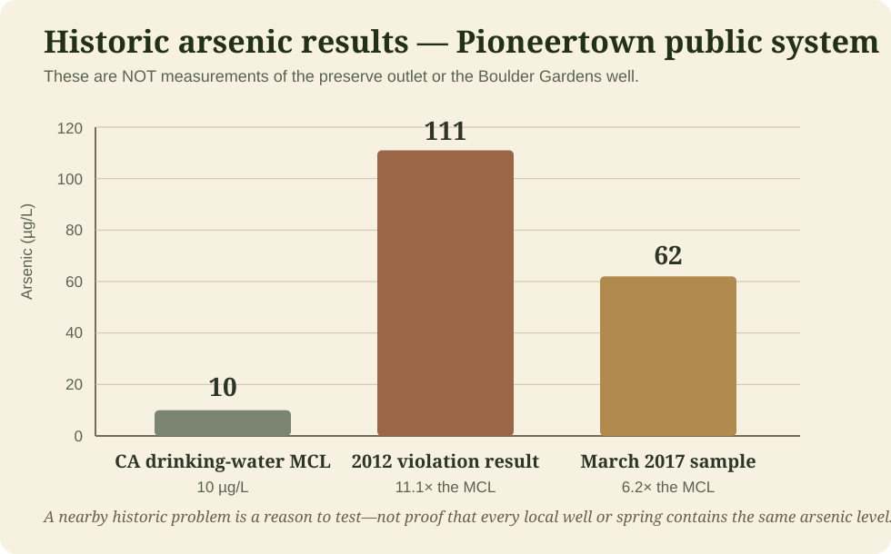

Pipes Canyon Fault Valley Basin
DWR basin 7-49 · 3,408 acres. DWR describes recharge as chiefly the infiltration of runoff through alluvial deposits at the base of the surrounding mountains.
Water · Living Record
Where our water comes from, where it goes, and what the desert geology may be telling us. A dried spring and a weekly water run have opened a much larger groundwater investigation.

Field Report 006 · Water
The weekly water-run story now lives where it belongs: in Field Report 006. It records the dried spring at Boulder Gardens, the preserve drinking-water outlet, the collection routine, the photographs, and the location map.
This Water record begins where the Field Report leaves off: What groundwater basin lies beneath each place? How does mountain-front recharge move through this landscape? And do the historic arsenic problems in Pioneertown-area public wells tell us anything about the water we actually use?
Read Field Report 006 →
Reading the Landscape
The surrounding desert can look dry on the surface while water is moving below it. The Preserve reports year-round riparian corridors in Pipes Canyon and a year-round stream within the Pipes Canyon Wilderness.

DWR basin 7-49 · 3,408 acres. DWR describes recharge as chiefly the infiltration of runoff through alluvial deposits at the base of the surrounding mountains.
The Wildlands Conservancy describes year-round riparian corridors in Pipes Canyon and Little Morongo Canyon. In a desert landscape, that vegetation is a visible clue to dependable water at or near the surface.
The preserve lists drinking water as an amenity, but the public page does not identify whether this specific outlet is gravity-fed, pumped, spring-fed, or supplied from a developed seep.
Groundwater Beneath Home
The well near Rimrock raises a different question from the preserve outlet. Current state mapping places a large groundwater basin immediately east of the San Bernardino Mountains, but the exact aquifer tapped by a private well cannot be assigned from a town name alone.

DWR basin 7-16 · 110,000 acres / 169.7 square miles. It underlies Ames Valley, Homestead Valley, and Pipes Wash.
DWR identifies natural recharge mainly as percolation of streamflow from the San Bernardino Mountains and precipitation on the valley floor. Groundwater generally moves eastward and northeastward.
DWR reports wells in the Ames Valley basin reaching as deep as 838 feet without encountering bedrock. Water chemistry can change with depth, geology, faults, and where water enters a well.
Water Quality
Pioneertown's documented groundwater problems are important context, but they are not proof that the preserve outlet—or every nearby private well—has the same chemistry.

California Drinking Water Watch records a 2012 arsenic violation for the Pioneertown public water system with an analysis result of 111 µg/L. San Bernardino County later reported 62 µg/L in March 2017. California's current arsenic maximum contaminant level is 10 µg/L.
County planning documents also identified fluoride and radiological constituents as concerns in the old Pioneertown groundwater supply. As of July 27, 2019, the community began receiving clean drinking water through a four-mile interconnection with Hi-Desert Water District after previously relying on groundwater wells with arsenic, uranium, and fluoride problems.
Boulder Gardens Water Systems
The Water page can grow as each source, storage system, and measurement becomes better documented.
Former local drinking-water source at Boulder Gardens. It has now dried up, making the change itself an important long-term observation.
Current status · dryExisting well near the mountain-front edge of the community. Exact depth, coordinates, completion details, and untreated-water chemistry should be added to the living record.
Priority · characterize & testThe current drinking-water routine is documented in FR006. The Field Report keeps the complete map and photographic record; this page follows the larger hydrology and water-quality questions.
See FR006 · active sourceRecorded tank geometry includes a roughly 91–92 inch diameter and about 65 inches of water depth from outlet to full level. Sensor monitoring is part of the Fieldstation water record.
Measured infrastructureOne water run
became a question.
The question became
a map of the land.
Next Fieldstation Investigation
Sources & Record Notes
Public sources establish the regional context. Fieldstation observations and photographs establish what we actually see and use.
“Water is not a separate system here. It is one of the ways the land explains itself.”
Boulder Gardens Fieldstation · ongoing investigation